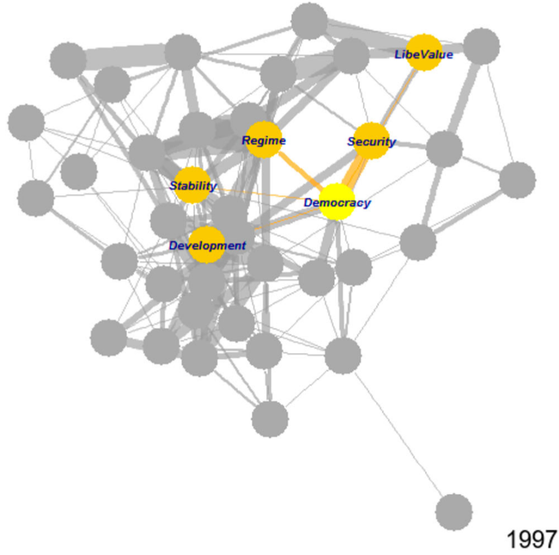

Text Analysis | 自然语言处理
Data Science and Text Analysis | 香港城市大学 CAMS

Graduate course 研究生课程 · CAMS, City University of Hong Kong 香港城市大学 · No prerequisites 无先修要求
Can a machine tell you who holds power in a room without understanding a word that is said? Can “king” minus “man” plus “woman” really arrive at “queen”? And in an age when a language model will read and write for you on request, is there any reason left to learn how machines read at all? The course opens on those questions and spends the term answering them.
Text Analysis moves in three stages: talk to the computer, teach the computer to read, then teach it to “understand.” The first stage covers R fundamentals and data visualization. The second turns text into data, beginning with the theory of text as evidence and continuing through scraping, regular expressions, and preprocessing. The third puts the data to work, through word frequency analysis, classification, and clustering, with a look past the bag-of-words assumption at the end. Students work in R with drhur, rvest, and quanteda.
The course assumes nothing. A little econometrics or programming makes the term easier, but neither is required, and the students it was designed for are the ones who chose the humanities and social sciences precisely because they seemed free of mathematics. That premise is worth contesting. Most data work needs only elementary mathematics, since the computer does the arithmetic; what it needs is the decomposition of a messy problem into ordered steps, which is a humanities strength rather than a deficit. The harder argument concerns AI. A model will hand you code that runs, which is enough to get by, but judging whether that code is correct, current, and appropriate demands exactly the ability it appeared to make unnecessary. Whether you use the tool or the tool uses you turns on that difference.
《自然语言处理》是我在香港城市大学CAMS开设的研究生课程，面向文科背景、没有编程经验的学生。课程从三个问题开始：在听不懂内容的情况下，能否判断说话者的身份与权力？“国王”减“男人”加“女人”是否真的约等于“女王”？在大语言模型代读代写的时代，人还有没有必要了解机器如何阅读？一个学期的内容，就是回答这三个问题。
课程沿三个阶段推进：与计算机对话、教计算机阅读、教计算机“理解”。第一阶段讲授R语言基础与数据可视化；第二阶段完成文本到数据的转化，从文本作为证据的理论出发，依次处理数据抓取、正则表达式与文本预处理；第三阶段进入应用，涵盖词频分析、分类与聚类，并在最后越过词袋假设向前一望。全部操作基于R语言，使用drhur、rvest与quanteda。
课程不设先修要求。学过一点计量或编程会让学习更轻松，但并非必要。事实上，本课的目标学生恰恰是当初因为“文科不用学数学”而选择人文社科的那一批人，而这个前提值得推敲。多数数据工作只需要基础数学，计算由机器完成；真正吃力的是把一个复杂问题拆解为清晰有序的步骤，而这正是文科训练的长处。更值得辨析的是AI。模型可以给出一段能运行的代码，足以应付眼前；但判断这段代码是否正确、是否为当下最优、是否适用于你的问题，所依赖的恰恰是它看似替代掉的那份能力。是你在用AI，还是AI在用你，分野就在这里。